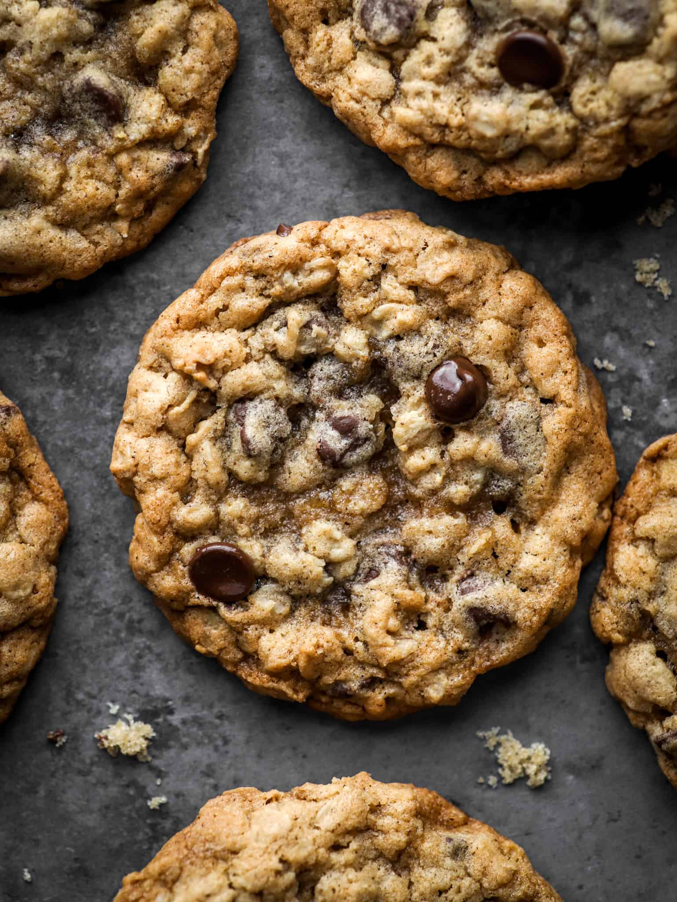

Chocolate Chip Oatmeal Cookies

Description
This is my grandmother's top secret recipe. DO NOT READ IT!
Ingredients:
- 1 cup shortening
- 1/2 cup brown sugar
- 1/2 cup white sugar
- 1 tsp baking soda
- 1/4 cup boiling water
- 1 tsp vanilla extract
- 1 3/4 cups all-purpose flour
- 1/2 tsp salt
- 2 cups rolled oats
- 1 cup chocolate chips
Directions:
- Cream shortening with white and brown sugar until light and fluffy.
- Dissolve baking soda in boiling water, then stir into creamed mix
along with the vanilla.
- Combine flour, salt, and rolled oats in a separate bowl.
- Mix dry parts slowly into wet mixture until stiff dough forms.
- Fold in the chocolate chips.
- Shape into small balls, place on an ungreased sheet, and flatten slightly.
- Bake at 350f for 12 to 15 minutes until set, avoiding over-browning.
Home